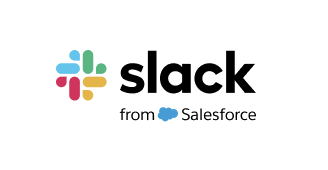
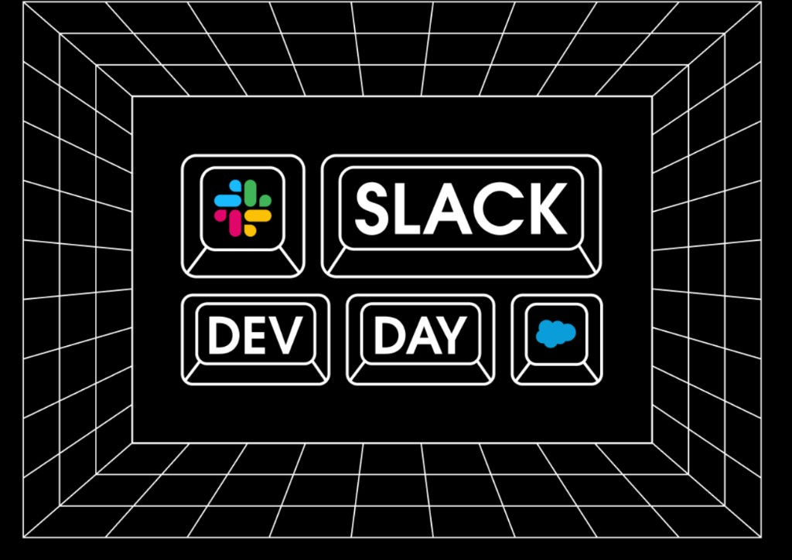

히로유키 이나바
트레일블레이저 관계·커뮤니티 총괄
세일즈포스 재팬


Slack의 최신 소식을 가장 먼저 만나세요. 지금부터 만드는 것이 즐거워집니다!
2026년 9월 4일 (금) · 오후 1시 · 온라인
지금 바로 시작하기Slack Dev Day Japan은 개발자 이벤트 입니다. 슬랙 앱과 AI 에이전트 학습 및 개발, 그리고 다른 개발자들과의 교류가 가능합니다.
AI 시대의 최신 슬랙 플랫폼 동향부터 실제 사례, 베스트 프랙티스, AI 에이전트 기회, 슬랙 커뮤니티가 창출하는 가치까지 슬랙의 현재와 미래를 넓게 만날 수 있습니다.
Slack Dev Day Japan은 기술 정보를 얻는 곳 그 이상입니다. 지속적으로 배우고, 소통하며, 새로운 발상과 혁신을 함께 만드는
개발자 커뮤니티의 시작점입니다.
AI 에이전트 시대의 Slack을 경험하고 동료 개발자를 만나며, 여러분의 다음 앱이나 서비스로 한 발 가까워지세요.
[라이브 스트리밍 URL]
당일 이벤트는 생중계로 진행됩니다. 시청 URL은 추후 이 페이지에 안내될 예정입니다.
사전 등록 없이 누구나 시청 가능합니다.
히로유키 이나바
트레일블레이저 관계·커뮤니티 총괄
세일즈포스 재팬
제이슨 웡
Slack 시니어 개발자 에반젤리스트
세일즈포스 재팬
레이야 호리
Slack 프로덕트 매니지먼트 매니저
세일즈포스 재팬